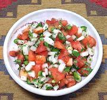

|
Salsa Cruda, BoliviaBolivia - Salsa Cruda | ||||
| Makes: Effort: Sched: DoAhead: |
1-1/2 cup ** 15 min No |
This popular Bolivian salsa has an excellent balance of flavors. It is used in salads, on warm dishes, or anywhere a salsa is appropriate. It's best made soon before it is to be used. | |||
|
|
6 6 1 2 2/3 |
oz oz T t |
Tomatoes, ripe Onion, white Chili (1) Quiliquiña (2) Salt |
Make - (15 min)
|